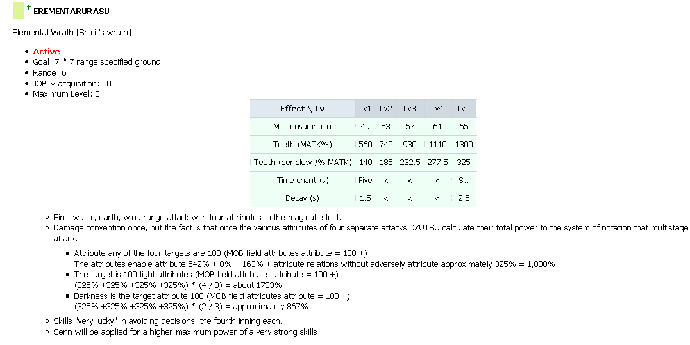

แต่ก่อนนั้น ทุกคนคิดเหมือนผมรึเปล่าว่า
elemental wrath
สกิลจ็อบ 50 Enchanter นั้นเป็นสกิลแบบเดียวกับ ลาวาและไอซี่ (เป็นเวทพื้นที่ส้ราง Damage หลาย Hit ลงซ้อนกันไม่ได้)
Porphyryl เขียน:
50
elemental wrath(5)
สร้างพายุหมุนขึ้น 7*7 ช่องรอบๆตัว เพื่อโจมตีใส่ศัตรูด้วยธาตุทั้ง 4
- ใช้ mp 49/53/57/61/65
- พลังโจมตี(ต่อ hit) 140/175/232.5/277.5/ 325% Matk
- พลังโจมตี(รวม 4 hit) 560/740/930/1110/1300% Matk
- ระยะเวลาร่าย 5/?/?/?6s
- delay 1.5/?/?/?/2.5s
สกิลนี้จะโจมตีศัตรู 4 ครั้ง ธาตุละ 1 ครั้ง
ตัวอย่างการโจมตีธาตุไฟ 100%
ธาตุเดียวกัน(ไฟ)0%+ธาตุที่ชนะทาง(ลม)542%+ธาตุที่แพ้ทาง(น้ำ)163%+ธาตุตรงกันข้าม(ลม)325%=1030% ธาตุแสง 100%
(325%+325%+325%+325%)*(4/3)=1733%ธาตุมืด 100%
(325%+325%+325%+325%)*(2/3)=867%
สกิลนี้จะโจมตีศัตรู 4 ครั้ง ธาตุละ 1 ครั้ง
วันนี้ หลังจากผมดูึ
คลิปของท่าน Lugia
ผมให้ผมรู้สึกสงสัยนิดหน่อย เพราะว่า Wrath ในคลิปนั้น มันลงทับกันได้ แสดงผลแค่แปปเดียว และถ้าสังเกตดีๆ เหมือนมันจะเห็น Damage แค่ Hit เดียว
และก็รูปนี้

350% Matk ยิงได้เกือบ 20k dmg เลยรึนั่น ยิ่งเป็นไปไม่ได้เข้าไปใหญ่
ผมก็คิดต่อไปอีก . . . .หรือว่ามันจะ zen ได้?(ปกติสกิลแนวนี้มัน Zen ไม่ได้นิหว่า ยิ่งทำให้ผมคิดว่ามันน่าจะเป็น สกิล Hit เดียว)
700% ยิงได้ 20k ต้องมี Matk อย่างน้อย 2857 และยังไม่คำนวณ mdef ตัวหน้าของพูรูๆ
จะบ้าเรอะ!! -*- (ด่าตัวเอง)
เพราะความอยากรู้(สุดๆ) ผมเลยไปลองค้นดูในวิกิ
ใช้ Google แปลออกมาได้ว่า

หลังจากที่ผมได้ตีความแบบงูๆปลาๆ
ได้มาว่า สกิลนี้เป็นสกิลโจมตี Hit เดียว แต่คำนวณ Damage แยกตามธาตุ!!!
และที่สำคัญมันใช้ร่วมกัน Zen ได้!!!!
ส่วนตรงสกิลลัคกี้นี่ไม่แน่ใจว่าหมายถึงมันเสี่ยงดวงว่าโดนรึ avoid 4 รอบรึเปล่า (แต่สกิลออก hit เดียว แล้วมันคำนวณยังไงหว่า - -")
ถ้าผมตีความถูกต้อง
สกิลนี้ที่ความแรงต่ำสุด (ยิงใส่ธาตุมืด 100%)
ก็ยังแรงกว่้า Luminary nova จ็อบ 45 ของ Sage (850% matk) อยู่อีก (17% matk)
เวลา Cast 6 วิ พอๆกับไอซี่และลาวา ที่ตอนนี้ร่ายยิงกันไม่ถึงวิ นั่นแหล่ะ
ลองคำนวณเล่นๆ
Matk ซัก 500 ยิงใส่พื้นแสง 100 แรง 1733%
Zen เข้าไปเป็น 3466% ประมาณ 34 เท่า!!!
ได้ Dmg 17330!!!!
เลข dmg 20k ทำได้ไม่ยากเลย
ปล.ถ้าผมตีความผิดตรงไหนทักด้วยน่อ
ปล2.เหมือนมันโกงๆไงมะรู้แรงเว่อร์
ปล3.สาระวันละนิด